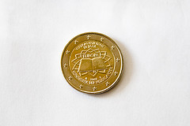

Product fotografie
Een kleine introductie in de wereld van product fotografie, want hoe doen winkels dat nou toch? Ze laten het product op zijn best uitkomen op de foto. Hier een kleine kijk in dat wereldje.
Belangrijk als je een voorwerp gaat fotograferen is dat de achtergrond zo egaal mogelijk wordt, zodat het makkelijker wordt het voorwerp in een witte folder te verwerken of deze digitaal uit de knippen en in een andere kleur achtergrond te plaatsen. Ook is het belangrijk dat de schaduwen niet te heftig zijn, het gaat vaak om kleinere voorwerpen waarbij schaduwen te overheersend worden en de fijnere details hierdoor minder zichtbaar worden. Belangrijk is dat je veel licht hebt zodat de sluitertijden voldoende hoog kunnen blijven, maar ook dat het licht dat rond het product valt zacht is (diffuus licht) zodat er zo veel mogelijk details zichtbaar blijven.
Als je gebruik gaat maken van een witte achtergrond, dan is het belangrijk om minimaal +1 stop over te belichten. De camera lichtmeter probeert altijd op 18% grijs uit te komen en dit betekent dat de witte achtergrond 18% grijzer wordt dan gewenst. We kunnen de camera corrigeren door over te belichten. Dit kan op de handmatige stand door de sluitertijd langer te maken, de iso gevoeligheid aan te passen of door het diafragma verder te openen. De achtergrond wordt dan correct wit weergegeven en doordat er detail verloren gaat in de achtergrond wordt deze ook egaler weergegeven.
Let er op dat als je te veel overbelicht dat er ook detail in het voorwerp verloren gaat en dit wil je juist niet. Als je het voorwerp van voor tot achter scherp wilt krijgen is het aanpassen van het diafragma vaak geen optie, omdat je scherptediepte anders afneemt. Fotografeer je een licht object of een object van glas dan kan het soms nodig zijn +1,5 of +2 stops over te belichten. Het omgekeerde geldt voor zwarte achtergronden, hier moet je juist -1 stop onderbelichten.
Door op je camera te kiezen voor ‘spotmeting’ meet de camera het licht dat op het voorwerp valt in een klein gedeelte van het beeld. Het voorwerp is donkerder dan de witte achtergrond waardoor de camera in dat geval een langere sluitertijd kiest en hierdoor wordt het al iets makkelijker de achtergrond wit te krijgen. Een goed hulpmiddel om te beoordelen of de achtergrond goed wit is geworden is het bekijken van het histogram op het LCD scherm van de camera.
Belichting
Gezien belichting het belangrijkste is bij productfotografie en het meeste uitmaakt, daarom hier nog een kleine apart stukje over het belichten bij productfotografie.
De eerste gedachte voor het belichten van een voorwerp is om naar de flitser te grijpen. Dit licht is echter vaak te fel voor het belichten van een voorwerp, zeker als het om de ingebouwde flits van de camera gaat. Ander bijkomend nadeel is dat er slagschaduwen ontstaan die van het voorwerp afleiden. Hierom is het beter om gebruik te maken van het zonlicht dat door het raam naar binnen valt of van het licht van lampen, waarbij in dat geval daglicht lampen de voorkeur hebben.
Let er in ieder geval op dat je zo veel mogelijk gebruik maakt van gelijke lichtbronnen. Elk type lamp heeft zijn eigen lichtkleur, dat niet zichtbaar is voor het menselijk oog doordat de hersenen dit compenseren, maar dat wel wordt opgemerkt door de camera. Zo kan er op het ene deel van het voorwerp een gelere gloed vallen als op het andere deel van het voorwerp, waardoor verkleuringen kunnen ontstaan.
Mede hierom is het aan te raden om gebruik te maken van een 18%-grijskaart. Deze fotografeer je op de plek van het voorwerp in het licht dat je gaat gebruiken tijdens de sessie en kun je gebruiken om in een fotobewerkingsprogramma aan het programma aan te geven wat de belichtingsomstandigheden waren waardoor het programma de witbalans kan compenseren. Zo zit er in onder andere Lightroom een pipet tool waarmee je op het gedeelte van de foto kunt klikken dat 18% grijs is, in dit geval de grijskaart. Het programma zorgt dan dat de kleuren weer zo worden weergegeven als dat ze tijdens het fotograferen waren.